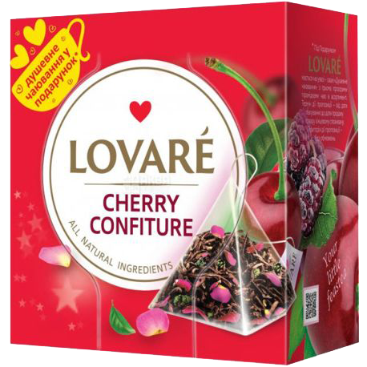

Тим паче буде все чудово, якщо чай вишневий, з одною ложкою цукру
Пий більше чаю, будь ласка..
Теплий чай, діє як заспокійливо при захворюваннях
- Розширяє судини
- Сприяє нормальному кровообігу
- Нормалізує тиск крові
- Багатий вітамінами